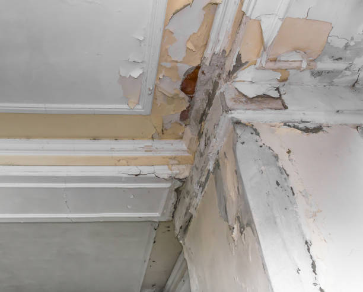

USA - Nationwide
info@waterdamagesusa.pro
USA - Nationwide
info@waterdamagesusa.pro

Fast and professional sewage backup cleanup services to safeguard your home and health. Contact us for expert help .
Don’t compromise your health! Our sewage backup cleanup services efficiently restore safety and hygiene, providing thorough decontamination and restoration for your home or business in Usa - Nationwide.
Residential & commercial Water Damage, Fire Damage and Mold Remediation
Quality services at affordable prices
Immediate 24/ 7 emergency services


In today's world, ensuring your home remains a safe and healthy environment is paramount. When you face residential water damage, the implications can be severe, affecting not only your property but also your health and comfort. At Water Damage, Fire Damage and Mold Remediation, we specialize in comprehensive water damage restoration services tailored to meet the unique needs of homeowners . Our team of certified professionals is on standby to provide rapid response and expert assessments to mitigate damage and expedite recovery.
Water damage can arise from many sources: burst pipes, overflowing bathtubs, malfunctioning appliances, or severe weather conditions. Each of these scenarios requires prompt and effective action to prevent further deterioration. Our technicians employ advanced water extraction techniques, high-grade dehumidification equipment, and a methodical approach to drying and repairing affected areas. The importance of acting quickly cannot be overstated; lingering moisture can lead to mold growth, structural damage, and costly repairs.
Why choose us? With years of experience and a track record of successful recoveries, we have established ourselves as the go-to choice for residents . Our certification, knowledge of local building codes, and commitment to quality ensure that not only are your immediate concerns addressed, but your property is restored to its pre-damage condition. We are here to support you at every step of the water damage restoration process, from initial damage assessment to the final repair work. Trust us to prioritize your family's safety and comfort.

In the heart of any thriving business lies a commitment to professionalism and quality. When water damage strikes, it doesn’t just affect your property; it can also disrupt operations and tarnish your reputation. At Water Damage, Fire Damage and Mold Remediation, we understand the urgency surrounding Commercial Water Damage Restoration. Our team is dedicated to minimizing downtime and restoring your business to optimal functionality as swiftly as possible with our expert services .
Our experienced technicians are well-equipped to handle the complexities of commercial spaces—from offices to retail locations. We employ advanced water extraction and drying technology, along with comprehensive assessment services to ensure every corner of your property is thoroughly addressed. By choosing us, you benefit from our deep understanding of insurance processes, helping to ease your financial concerns. Let Water Damage, Fire Damage and Mold Remediation protect your investment and reputation with our impeccable restoration services.

When water invades your space, whether from a broken pipe or an unexpected flood, prompt action is vital. Our emergency water extraction services at Water Damage, Fire Damage and Mold Remediation are designed to address scenarios where time is of the essence. Our professional technicians are available 24/7, ready to respond swiftly and efficiently to your emergency needs. We understand that every minute counts during a water crisis, which is why we arrive fully equipped to extract water immediately and prevent additional damage.
Why Choose Us? We are the area’s leading experts in emergency water extraction, backed by years of dedicated service. Our team is IICRC certified, ensuring we adhere to the highest industry standards. At Water Damage, Fire Damage and Mold Remediation, your satisfaction is our priority, and we strive to provide a seamless experience. With our quick response time, state-of-the-art equipment, and compassionate service, we are the ideal choice for emergency situations . You can rest assured knowing you are in capable hands.

Flooding can be one of the most catastrophic disasters a homeowner or business owner can face. Beyond the visible damage to your property, the aftermath is often overwhelming. At Water Damage, Fire Damage and Mold Remediation, we specialize in comprehensive flood damage cleanup services that are designed to restore your property and give you back your peace of mind.
Flood damage can occur for a multitude of reasons – from natural disasters to plumbing failures. Whatever the cause, the removal of water needs to be tackled promptly. Our expert team is well-versed in the latest flood damage cleanup techniques and arrives ready to work swiftly. Our first step is to assess the severity of the flooding and devise an effective strategy to minimize damage.
Our team utilizes powerful pumps and vacuums tailored specifically for large-scale flood cleanup. This enables us to remove water quickly and thoroughly. We are aware that any delay in floodwater removal can lead to extensive additional damages, including mold growth, which can compromise your health and property.
Once the initial water extraction is complete, we focus on drying and preventing further damage. This step is crucial in flood damage cleanup. Our high-capacity dehumidifiers and air movers ensure that every corner of your property is thoroughly dried out. We understand that intact structural integrity is vital to your property, and our thorough process aims to protect that.
We also know that flood damage can be an emotional burden for many. Our compassionate team is sensitive to the challenges homeowners face during such times. We communicate openly about our processes, helping you understand the steps we are taking each step of the way. Over the years, Water Damage, Fire Damage and Mold Remediation has become a trusted name in flood damage cleanup and our track record speaks to our commitment to excellence.

A basement can be a precious part of your home, serving as a storage space, recreation area, or even an additional living area. However, it’s often susceptible to water damage due to its below-ground location. At Water Damage, Fire Damage and Mold Remediation, we specialize in basement water damage restoration services tailored to the specific challenges associated with these environments .
Basement flooding can result from various issues, such as heavy rain, foundation cracks, or plumbing failures. Recognizing the signs, including musty odors, mold growth, or damp walls, is crucial for early intervention. Our team employs cutting-edge water extraction and drying techniques to eliminate moisture and restore your basement to its previous condition.
With years of experience we have developed a deep understanding of local environmental factors and their impact on basements. We pride ourselves on offering personalized service, ensuring we address not just the visible damage but also the underlying issues contributing to the water intrusion. By choosing us, you select a partner dedicated to restoring your basement space efficiently and thoroughly.

When severe weather strikes, the aftermath can leave homeowners and business owners grappling with extensive damage. At Water Damage, Fire Damage and Mold Remediation, we understand the challenges posed by storms and offer exceptional storm damage restoration services . Our comprehensive approach ensures that your property is restored effectively, allowing you to regain control after nature’s fury.
Storm damage can take on many forms – from flooding and roof damage to fallen trees and debris. Our team of specialists is trained to assess all types of storm-related damages quickly. We utilize advanced assessment tools to give a clear picture of what repairs are necessary to restore your property safely.
Once we assess the damage, we move quickly into action. Our priority is to stabilize your property and prevent further damage. We have the equipment required to manage any standing water, ensuring that it is extracted promptly. After water removal, we initiate our drying process using powerful industrial fans and dehumidifiers designed for large areas.
In addition to water-related issues, storm damage can also lead to structural problems. Whether a tree has fallen on your home or wind has caused roof damage, our team is equipped to provide repair services. We handle everything from temporary board-ups to full-scale reconstruction, ensuring that your property is safe and secure.
What sets Water Damage, Fire Damage and Mold Remediation apart is our commitment to excellent customer service during the restoration process. We understand that the emotional toll associated with storm damage can be overwhelming, and we focus on providing compassionate support and clear communication throughout your recovery journey. Trust us for your storm damage restoration needs ; we are here to help you rebuild and recover.

Water damage can manifest in various areas of your home, particularly in ceilings and walls. Indications of water damage might include discoloration, sagging, or peeling paint. If left unattended, these issues can lead to mold growth and further damage. At Water Damage, Fire Damage and Mold Remediation, we specialize in ceiling and wall water damage repair in Usa - Nationwide, addressing not just the symptoms but the root causes of the damage to ensure long-lasting solutions.
Why Choose Us? Our team comprises experts in structural repairs and restoration. We use only the highest quality materials and techniques to ensure the integrity and aesthetics of your home are restored. Clients trust us for our thorough inspections and quality repairs, as we take every aspect of your damage seriously. Our goal is to provide a hassle-free experience from start to finish.

Water damage can destroy not just the structure of your home or business, but also your beloved furnishings. At Water Damage, Fire Damage and Mold Remediation, we offer specialized carpet and upholstery water damage repair services ensuring your furnishings are restored and your indoor environment remains healthy and safe.
Excess moisture and water can ruin carpets and upholstered items, causing discoloration, odors, and potential mold growth. We understand that every moment counts when it comes to preserving your carpets and upholstery. Our team is trained to respond swiftly to water damage, assessing affected areas and creating an effective restoration plan tailored to your specific needs.
Upon arrival, we conduct a detailed inspection of your carpets and upholstery, identifying the level of damage and the type of fabric we’re dealing with. Using cutting-edge equipment, we carefully extract water to minimize damage to the fibers.
Next, we move to drying and cleaning procedures. Our powerful dehumidifiers and air movers help remove all moisture. We also employ specialized cleaning methods for different types of carpets and upholstery to ensure a thorough job without damaging the material. Our goal is to restore the original beauty and appearance of your furnishings.
In addition to restoration, we also focus on prevention. After the cleaning process, we treat your carpets with protective solutions to safeguard against future water damage. Customer satisfaction is at the heart of what we do, providing you with updates during every step and making sure you feel confident in our work.
When it comes to carpet and upholstery water damage repair Water Damage, Fire Damage and Mold Remediation is proud to offer comprehensive solutions that breathe new life into your furnishings while preserving their integrity.

After a water damage incident, the critical next step is drying and dehumidification. Removing moisture from your property is essential to prevent mold growth and structural damage. At Water Damage, Fire Damage and Mold Remediation, we offer comprehensive drying and dehumidification services utilizing advanced equipment and techniques to create an optimal environment for drying. Our professionals understand the science of drying, ensuring your property is returned to a safe and healthy state.
Why Choose Us? Our trained technicians are experts in moisture detection and control. We customize our drying plans based on the unique needs of your property, ensuring that all affected areas are thoroughly dried. We are committed to educating our clients about the drying process and the importance of timely intervention. Choose Water Damage, Fire Damage and Mold Remediation because we are dedicated to restoring your space efficiently and effectively.

Water damage can compromise the very structure of your home or business, making expert repair services a necessity. At Water Damage, Fire Damage and Mold Remediation, we specialize in structural water damage repair in Usa - Nationwide, ensuring that your property is safe, secure, and restored to its original condition.
The implications of structural water damage can be severe, resulting in weakened foundations, compromised walls, and safety hazards. When you choose us, you’re opting for a team that understands the gravity of these issues and responds with urgency. Our qualified professionals take the time to conduct a thorough inspection, assessing all areas affected by water damage.
Upon identifying the extent of structural damage, we devise a complete restoration plan. Our team has the experience and knowledge to handle everything from rebuilding walls to reinforcing foundations. We use high-quality materials and follow industry best practices to ensure that all repairs provide lasting results.
At Water Damage, Fire Damage and Mold Remediation, we believe in a comprehensive approach to structural water damage repair. We don’t just fix the visible issues; we also address any underlying conditions that might lead to future problems. This forward-thinking mindset ensures that your property remains safe and secure long after we leave.
Communication is vital during the repair process. Our team remains in constant contact with you, updating you on our progress and answering any questions you may have. Our reputation for excellence in structural water damage repair speaks to our commitment to quality and customer service. Trust us with your restoration needs, and let us help you bring your property back to its former glory.

Appliance leaks can lead to serious water damage if not handled quickly. From dishwashers to washing machines, even minor leaks can escalate into major issues quickly. At Water Damage, Fire Damage and Mold Remediation, we provide professional appliance leak water damage repair services ensuring that your home remains safe and dry. We specialize in both the repair of the leak source and the mitigation of resulting water damage.
Why Choose Us? Our experienced team has handled countless appliance leak situations and knows the best practices for dealing with the aftermath. We provide prompt response times and thorough inspections to address not only the visible damage but also any hidden moisture that could lead to mold. Choose Water Damage, Fire Damage and Mold Remediation because we care about your home’s safety and provide lasting solutions for appliance-related water issues .

Crawl spaces are often overlooked areas in homes, but they can be vulnerable to water damage that not only affects the space itself but the entire home structure. At Water Damage, Fire Damage and Mold Remediation, we offer specialized crawl space water damage restoration services to address these hidden issues professionally and effectively.
Water intrusion in crawl spaces can occur due to flooding, poor drainage, or plumbing leaks. The damage from moisture can lead to mold growth, pest infestations, and structural issues if left untreated. Hence, early intervention is essential. When you call us, our team responds promptly to assess the condition of your crawl space and determine appropriate solutions.
With our advanced moisture detection technology, we can evaluate even the most hard-to-reach areas to identify sources of water damage. Once we determine the extent of the damage, we focus on removing any standing water. Our industrial-grade pumps and vacuums excel in quickly extracting moisture from crawl spaces.
The next crucial phase is drying. We understand that humidity can linger in crawl spaces, creating a suitable environment for mold. Our high-capacity dehumidification systems are tailored to ensuring that the air in your crawl space is dry and healthy. We don’t just deal with the visible damage, but take steps to mitigate future problems.
After completing the drying process, our professional team takes care of any repairs to your crawl space. We thoroughly inspect for any structural issues or damage to insulation and provide necessary repairs for long-lasting effectiveness.
Choosing Water Damage, Fire Damage and Mold Remediation for your crawl space water damage restoration needs means choosing a comprehensive solution based on years of experience. With our commitment to quality and customer education, we ensure you understand every step of our process.

When water seeps into hardwood flooring, the aftermath can quickly become a serious concern. If not addressed promptly, water damage can warp and ruin your beautiful floors. At Water Damage, Fire Damage and Mold Remediation, we specialize in expert hardwood floor water damage repair services bringing back their natural beauty and integrity.
Hardwood floors are especially susceptible to water damage due to their porous nature. Whether the source is a plumbing leak or flooding, the risks increase if water isn’t extracted and dried efficiently. Our team understands these challenges and is trained to evaluate and restore hardwood flooring effectively.
When we arrive, we conduct a detailed assessment to determine the extent of the damage to your hardwood floors. Utilizing moisture detection tools allows us to identify hidden water accumulation and plan our restoration accordingly.
Once we understand the situation, we quickly implement our water extraction processes. Our specialized equipment helps us efficiently remove moisture from the surface and subfloor. Then, we proceed with drying your hardwood floors, using air movers specifically designed for wooden surfaces to circulate air and draw out moisture effectively.
Repairing hardwood floors involves gentle techniques to minimize further damage while ensuring a thorough restoration. We may need to replace boards that are beyond repair, or we could treat them with methods designed to restore their original sheen.
At Water Damage, Fire Damage and Mold Remediation, we realize the aesthetics and value of your hardwood floors. That’s why we strive for perfection in our work while providing informative updates about the restoration process. For hardwood floor water damage repair in Usa - Nationwide, trust Water Damage, Fire Damage and Mold Remediation to restore your floors to their original luster.

Frozen pipes can result in devastating water damage when they thaw and burst. At Water Damage, Fire Damage and Mold Remediation, we specialize in Frozen Pipe Water Damage Repair services helping you address the aftermath of pipe bursts effectively. Our dedicated team knows how to assess, remove, and mitigate water damage to restore your home to a safe and functional condition.
The remedy to frozen pipe issues isn’t just about cleaning up; it requires a systematic approach to restore the integrity of your home’s plumbing and prevent future occurrences. Our knowledgeable experts will provide comprehensive solutions that ensure your home is safe, secure, and moisture-free. Choose Water Damage, Fire Damage and Mold Remediation to restore peace and comfort to your space after frozen pipe incidents.

Smoke and soot can cause damage that lingers long after a fire. At Water Damage, Fire Damage and Mold Remediation, we provide specialized Smoke and Soot Damage Cleanup services that are critical to restoring your property effectively after a fire. Our professional team understands that smoke can infiltrate every corner of your home or business, leaving behind odors and residues that require immediate remediation.
Our meticulous cleaning techniques ensure that every surface is addressed, removing soot from walls, ceilings, and other affected areas, while also working diligently to neutralize smoke odors. Partnering with us means you are choosing a committed team focused on returning your environment to its original state. Trust Water Damage, Fire Damage and Mold Remediation for thorough cleanup services that restore your comfort and safety.

The aftermath of a fire can be devastating, both emotionally and structurally. At Water Damage, Fire Damage and Mold Remediation, we specialize in structural fire damage restoration committed to helping you recover as seamlessly as possible.
After a fire, property owners are often left with burnt walls, warped structures, and unsafe environments. That’s why our team of experts is committed to providing thorough assessments and comprehensive restoration plans tailored to your specific situation. Upon your call, we arrive promptly to evaluate the damage.
Our first priority is ensuring the safety of the property. Our trained professionals will assess risk factors and begin the restoration process as soon as it is deemed safe to do so. We utilize advanced technology to evaluate structural integrity and identify areas that require repairs.
Once we outline the restoration plan, we begin the essential tasks of removing damaged materials, reconstructing compromised areas, and fortifying structures for future safety. Our goal is to restore the building’s integrity while minimizing interruptions during the restoration process.
At Water Damage, Fire Damage and Mold Remediation, we pride ourselves on impeccable service, transparency, and dedication to our clients. We know that recovery from fire damage can be traumatic, and we aim to alleviate the stress involved. For structural fire damage restoration in Usa - Nationwide, trust us to help you rebuild your future, starting today.

Fire can be devastating, not just to buildings but to cherished belongings as well. At Water Damage, Fire Damage and Mold Remediation, we offer Fire-Damaged Furniture Restoration services providing specialized treatment to salvage and restore your valuable items. Our trained professionals are equipped to assess the damage and implement effective restoration techniques that revitalize your beloved furniture.
Why choose us? Our focus is on customer satisfaction and meticulous restoration techniques that prioritize both appearance and functionality. Whether your pieces need cleaning, color restoration, or structural repairs, our team goes above and beyond to help you reclaim your belongings. Trust Water Damage, Fire Damage and Mold Remediation for compassionate and proficient furniture restoration services that breathe new life into your home.

After experiencing a fire, lingering smoke odors can be an unbearable reminder of the traumatic event. Effective odor removal requires specialized methods and expertise. At Water Damage, Fire Damage and Mold Remediation, we specialize in odor removal after fire services ensuring your home smells fresh and clean once again.
Smoke odors can seep into walls, carpets, and upholstery, making them extremely difficult to eliminate with standard cleaning methods. Our trained professionals utilize advanced techniques and equipment to tackle these stubborn odors effectively.
Initially, we assess the extent of smoke odors present in your property, identifying all sources and affected materials. Our team employs a systematic approach, utilizing ozone treatments and air purification devices that neutralize odor molecules rather than just masking them.
Our goal is to provide you with a living space that feels welcoming while ensuring that any reminders of the fire event are completely eradicated. During the process, our team keeps you informed, explaining the techniques we use, and providing guidance to prevent future odor issues.
With Water Damage, Fire Damage and Mold Remediation, you can trust that we are committed to your needs during what can be a challenging time. For reliable odor removal after fire services allow us to help you reclaim your space and peace of mind.

After a fire or other disaster, securing your property is a top priority. Emergency board-up services protect your home or business from further damage and unauthorized entry. At Water Damage, Fire Damage and Mold Remediation, we provide comprehensive emergency board-up services in Usa - Nationwide to help you safeguard your property during the recovery process.
The aftermath of a disaster can leave windows shattered, doors compromised, or roofs exposed. Our team understands the urgency that accompanies these situations and responds rapidly to your call. We prioritize mitigating potential risks, ensuring that your property is secure against the elements and unwanted visitors.
Once on-site, our trained professionals will assess the damage and determine the best approach for boarding up affected areas. We utilize high-quality boards and materials tailored to the specific requirements of your property, ensuring secure installations that stand up to external threats.
Our commitment does not end with the physical boarding up of your property. We also work closely with you throughout the recovery process, coordinating with restoration teams as needed. Communication and transparency are hallmarks of our service, ensuring you are kept up to date every step of the way.
For reliable emergency board-up services in Usa - Nationwide, you can trust Water Damage, Fire Damage and Mold Remediation to provide immediate and efficient support. We’re here to help you navigate the recovery process with peace of mind.

The aftermath of a fire can leave your belongings in disarray, and some may be salvageable with proper care. At Water Damage, Fire Damage and Mold Remediation, we provide Content Cleaning and Restoration After Fire services focusing on restoring your valuable items and possessions. Our professionals understand the complexity of fire damage and offer specialized cleaning techniques aimed at reviving your belongings.
From electronics to keepsakes, we use advanced methods to clean, deodorize, and restore items affected by smoke and soot. Our dedication to preserving your items ensures you can recover treasured possessions. Choose Water Damage, Fire Damage and Mold Remediation for meticulous and compassionate content restoration efforts that help you reconnect with your cherished belongings.

When a fire strikes a commercial property, business owners face unique challenges involving safety, operational interruptions, and extensive damage. At Water Damage, Fire Damage and Mold Remediation, we specialize in fire damage restoration for commercial properties providing tailored services that ensure your business can return to normal as efficiently as possible.
Understanding that time is of the essence for businesses, our trained professionals are ready to respond promptly to your call. We emphasize safety first — conducting a thorough risk assessment to determine how we can best restore your commercial space while protecting employees and visitors.
Our specialized team utilizes advanced techniques to address fire damage, including structural repairs, smoke and soot cleanup, and content restoration. We work systematically to assess all affected areas, ensuring that no detail is overlooked, while keeping business continuity in mind.
Effective communication is a cornerstone of our service. We work closely with business owners, explaining each step of the restoration process and how it will impact your operations. Our goal is to provide the support you need while minimizing downtime and disruptions.
Choose Water Damage, Fire Damage and Mold Remediation for fire damage restoration for commercial properties in Usa - Nationwide. Our commitment to excellence and understanding of business needs set us apart as leaders in restoration services.

Electrical fires can be particularly damaging and often lead to extensive structural concerns. At Water Damage, Fire Damage and Mold Remediation, we offer specialized Electrical Fire Damage Repair services ensuring that all aspects of damage are addressed thoroughly and professionally. Our team consists of certified technicians who are well-versed in identifying and dealing with the aftermath of electrical fires.
We prioritize safety and compliance with codes during the restoration process, helping to mitigate risks and restore your property effectively. Choosing Water Damage, Fire Damage and Mold Remediation means securing the trust of a team focused on both immediate recovery and long-term safety. We’re dedicated to helping you restore your space and offer peace of mind through careful restoration practices.

Kitchen fires are among the most common household disasters, often resulting in significant damage due to flames, smoke, and heat. At Water Damage, Fire Damage and Mold Remediation, we provide specialized kitchen fire damage restoration services helping homeowners recover from the distress that follows a kitchen fire incident.
After a kitchen fire, the first step is to ensure your safety and assess damage severity. Our trained professionals arrive on-site promptly to evaluate the extent of fire and smoke damage, focusing on surfaces, appliances, and cabinetry affected by the fire.
Our team employs comprehensive cleaning solutions tailored for kitchen environments, utilizing specialized equipment to remove smoke residues and odors from various materials. We address all aspects of restoration, from repairing cabinets to replacing damaged appliances, ensuring your kitchen is not only functional but restored to its original beauty.
We recognize the unique challenges posed by kitchen fires, including insurance claims and potential renovation needs. Our experienced team is here to assist you through this process, providing clarity about restoration steps while maintaining open communication throughout.
For kitchen fire damage restoration in Usa - Nationwide, choose Water Damage, Fire Damage and Mold Remediation. Our commitment to excellence ensures that your kitchen is restored to its former glory, ready for you to create memories in again.

Navigating the aftermath of fire damage while dealing with insurance claims can be overwhelming. At Water Damage, Fire Damage and Mold Remediation, we offer comprehensive Insurance Claim Assistance for Fire Damage ensuring that you have the support you need to facilitate a smoother claims process. Our experienced team understands the intricacies of insurance claims, helping you document damages, gather necessary evidence, and prepare a comprehensive claim.
Choosing us means you’re not just getting restoration services; you’re gaining advocates who prioritize your interests. Our goal is to relieve some of the stress associated with recovery, enabling you to focus on rebuilding your life. Rely on Water Damage, Fire Damage and Mold Remediation for compassionate insurance claim assistance as you navigate the path to recovery.

Mold can pose serious health risks and property damage if left untreated. If you suspect mold growth in your home, immediate action is vital. At Water Damage, Fire Damage and Mold Remediation, we specialize in residential mold remediation in Usa - Nationwide, employing comprehensive practices to identify and eliminate mold while preventing future growth.
Why Choose Us? Our team is trained in advanced mold remediation techniques. We conduct thorough inspections and use eco-friendly products to ensure safe and effective removal. Your health and safety are our priorities, and we take pride in providing thorough services that leave your home clean and free from harmful mold. Trust Water Damage, Fire Damage and Mold Remediation for reliable mold remediation .
Mold issues in commercial properties can lead to severe health risks, operational disruptions, and costly repairs. At Water Damage, Fire Damage and Mold Remediation, we provide specialized commercial mold remediation services dedicated to restoring your business environment to a safe and healthy state.
Understanding the urgency that comes with mold growth in commercial settings, our team responds rapidly to assess the situation. We conduct thorough inspections to locate moisture sources and determine the extent of mold contamination across your property.
Once the assessment is complete, we develop a targeted remediation plan that addresses the unique needs of your business. Our process comprises not only mold removal but also strategies designed to prevent future occurrences.
Our team utilizes state-of-the-art equipment and methods to contain, remove, and treat affected areas, ensuring that the indoor air quality remains safe for your employees and customers. We prioritize restoration timelines while minimizing disruption to your daily operations.
At Water Damage, Fire Damage and Mold Remediation, our commitment to excellence extends beyond remediation. We also offer educational insights on maintaining a mold-free environment moving forward. Trust us for effective commercial mold remediation that protects your business and promotes a healthy workplace.
Black mold, often associated with serious health issues, can be a daunting challenge for homeowners. If you suspect that you have black mold in your residence, prompt attention is critical. At Water Damage, Fire Damage and Mold Remediation, we specialize in professional black mold removal services committed to ensuring your home is safe and healthy.
Understanding the risks posed by black mold, our experienced team is trained in effective assessment and remediation strategies. Once contacted, we respond swiftly to conduct a comprehensive inspection, identifying the source of mold growth and assessing the level of contamination.
Our removal process is methodical and thorough. We employ specialized containment techniques to prevent spores from spreading during removal, ensuring your home remains free of further contamination. We remove any affected materials, followed by thorough cleaning and treatment of surfaces where mold was present.
After the removal process, our team conducts air quality tests to verify the effectiveness of our remediation efforts. We believe that communication is key during this process, so we ensure that you stay informed every step of the way.
For effective black mold removal services choose Water Damage, Fire Damage and Mold Remediation. Our commitment to safety and quality garners trust, ensuring a mold-free environment for you and your family.
Early detection of mold is essential for preventing health issues and structural damage. At Water Damage, Fire Damage and Mold Remediation, we offer comprehensive mold inspection and testing services to effectively assess and identify potential mold problems in your home or business.
Our trained professionals arrive ready to evaluate your property for signs of mold growth. We conduct meticulous visual inspections, looking for moisture-prone areas, visible mold, and water damage indicators. If we suspect mold presence, we proceed with testing protocols to accurately determine the type and extent of mold issues present.
Using advanced testing methods, such as air sampling and surface swabbing, we collect samples that are sent to a certified laboratory for analysis. This information is critical for developing an effective remediation plan based on the specific type of mold and its potential impact on health.
At Water Damage, Fire Damage and Mold Remediation, we understand the need for timely intervention in mold-related issues. Our team is dedicated to returning clear results and ensuring you understand the inspection process and findings. Choose us for expert mold inspection and testing in Usa - Nationwide, guiding you toward a safe and mold-free environment.
Mold growth in attics is a common issue, often exacerbated by inadequate ventilation and excess moisture. At Water Damage, Fire Damage and Mold Remediation, we specialize in Attic Mold Remediation services in Usa - Nationwide, helping homeowners reclaim their attics while ensuring they remain safe and free from mold. Our knowledgeable team performs thorough assessments, identifying mold sources and employing effective removal techniques.
Our goal is not only to eliminate existing mold but also to address underlying issues to prevent future growth. Choosing Water Damage, Fire Damage and Mold Remediation ensures a comprehensive, professional approach that revitalizes your attic space. We’re dedicated to restoring your peace of mind and improving your home’s overall health.
Basements are often moist environments, which can be breeding grounds for mold if left unattended. At Water Damage, Fire Damage and Mold Remediation, we specialize in basement mold removal services providing homeowners with peace of mind and a mold-free living space.
When dealing with mold issues in basements, time and efficiency are crucial. Our team is trained to respond quickly to your call for help. We conduct a detailed inspection to identify visible mold as well as any hidden moisture sources contributing to the problem.
Our mold removal process includes thorough cleaning and removal of contaminated materials, often using specialized equipment to ensure the safe and effective elimination of mold from all surfaces. We also implement drying and dehumidification methods to keep your basement safe and dry from future mold threats.
Education is a vital part of our service. We provide valuable insights into preventing future mold growth, helping you understand humidity control strategies and maintenance practices that preserve your basement’s integrity.
Choose Water Damage, Fire Damage and Mold Remediation for reliable basement mold removal services . Our dedication to restoring your space and ensuring your health is our top priority.
The crawl space beneath your home can often go unnoticed, but water intrusion and humidity can lead to serious mold issues. At Water Damage, Fire Damage and Mold Remediation, we specialize in crawl space mold remediation services ensuring that your home remains safe from the potential hazards of mold development.
When we arrive on-site, our team will conduct a comprehensive assessment of your crawl space to identify mold growth and moisture sources that need to be addressed. Through advanced techniques like moisture detection, we pinpoint areas that require remediation and immediate attention.
Our process begins with containment to ensure that mold spores do not spread during the remediation process. We then remove all affected materials and treat the area to eliminate any residual spores. Our team utilizes effective solutions that respect your family’s health and safety.
Additionally, we aim to address root causes of moisture problems in the crawl space. This might include focused efforts on drainage, insulation repairs, and dehumidification strategies.
At Water Damage, Fire Damage and Mold Remediation, your safety and satisfaction are our top priorities. Count on us for expert crawl space mold remediation restoring both your environment and peace of mind.
Bathrooms are high-moisture areas that are often vulnerable to mold growth. At Water Damage, Fire Damage and Mold Remediation, we provide specialized bathroom mold removal services in Usa - Nationwide, addressingmold issues effectively to protect your health and home.
Why Choose Us? Our trained professionals use effective methods to identify and remove mold from bathrooms, targeting hidden growth and moisture sources. We focus on restoring your bathroom’s cleanliness and safety. Choose Water Damage, Fire Damage and Mold Remediation for expert mold removal – your satisfaction is our commitment.
Mold can thrive in HVAC systems, affecting indoor air quality and spreading spores throughout your home. At Water Damage, Fire Damage and Mold Remediation, we offer comprehensive HVAC mold remediation services in Usa - Nationwide, focusing on restoring safe air quality and system efficiency.
Why Choose Us? Our skilled technicians conduct thorough inspections and use advanced remediation practices to eliminate mold from your HVAC system. We prioritize your family’s health and work to prevent mold recurrence. Choose Water Damage, Fire Damage and Mold Remediation for HVAC mold remediation where our expertise ensures your air is clean and safe to breathe.
After a water event, mold growth can rapidly follow if moisture is not adequately addressed. At Water Damage, Fire Damage and Mold Remediation, we specialize in Post-Water Damage Mold Remediation services ensuring a comprehensive approach to managing mold risks after water damage occurs. Our trained specialists understand the urgency of mold remediation, employing swift actions to remove excess moisture and prevent mold proliferation.
We conduct thorough assessments and implement tailored solutions for effective mold removal. With our dedication to customer satisfaction and the health of your environment, you can trust Water Damage, Fire Damage and Mold Remediation to protect your living space from the threats of mold growth post-water damage.
USA - Nationwide Water Damage, Fire Damage and Mold Remediation Pros
(877) 848-1711
info@waterdamagesusa.pro
09.00 AM - 09.00 PM
09.00 AM - 12.00 PM